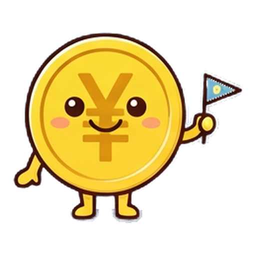
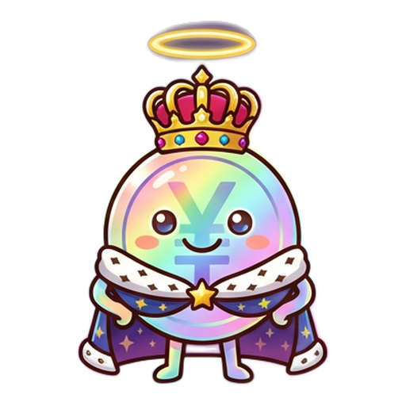

スタンプを送るたび、いいねを押すたびに、応援しているチームの順位が動く。ファンがつくる、もうひとつの順位表です。

1チームを選ぶ開催中のリーグから、応援したいチームを見つけます。
応援スタンプは ¥300 から。いいねは毎日1回、無料です。
♡ いいねは毎日無料
3順位が動く送った応援がエールポイントになり、その場で順位に加算されます。
どのリーグも、中間発表と最終発表で順位が確定します。気になるチームを見つけたら、まずはいいねから。
試合の結果とは関係なく、ファンの応援だけで決まる順位表。だから、試合のない日にも盛り上がれます。
「◯◯杯 応援ランキング」のように、企業が協賛する大会として開かれます。
3か月の途中で一度、順位を確定して発表。最後まで目が離せません。
優勝チームとリーグ全体で、いちばん応援した人を「MVP サポーター」として表彰します（希望者のみ・賞品なし）。
各チームが自分たちのスタンプを用意できます。応援の仕方も、チームの個性が出ます。
部活・地域の挑戦・プロジェクトなど、チームのページを作ってリーグに参加できます。
はい。ログインすると、毎日1回、無料でいいねを押せます。いいねも順位に加算されます。
ありません。ファンの応援だけで決まる、公式戦とは別の順位表です。
応援スタンプの代金は、リーグを運営する団体やチーム（団体・法人）に支払われます。【要確認: 利用規約（代理受領型）の文面に合わせて確定】
このページは zenicle.jp の作り直し案（モック）です。ファーストビューの順位は動きを見せるための架空のリーグです。「いま開催中のリーグ」と実績の数字は本番の公開データを読みます。